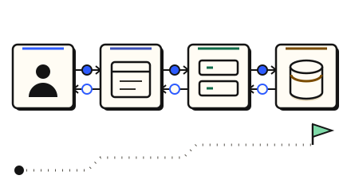

Start · 3 minutes
Your first system
Build a tiny app in three minutes and keep it standing through a rush of visitors.
Open this lesson
Your first traffic day
- Build the back end of an app, then see what holds under traffic. Each moving dot is a request from a person using your app.
- It is early morning. One server handles about 1,000 requests a second (approx.). By midday about 3,000 a second will arrive.
- Tap the servers to open their settings, then press + until you have 3 servers. The day waits for you.
- Your app knows one address. A load balancer is a receptionist that hands each request to a free server.
- Drag the load balancer onto the line between the phone and the servers.
- Most people ask for the same few things. A cache remembers recent answers, so the database is not asked again.
- Drag the cache onto the line between the servers and the database. A cache answer takes about 1 ms, a database about 5 ms (approx.).
- Spikes come without warning, and new servers take 2 to 4 minutes to start (approx.). Tap the servers and switch on Autoscale, so servers are added for you.
- Viral spike! Traffic is 3 times normal. Watch the autoscaler add servers.
- The day is over. Cost is shown as a monthly figure (approx.).
Check your reasoning
Think through these questions before opening the lesson. In the game you can test the idea and compare your reasoning.
- What does a load balancer do?
- What does a cache save?
- Why can a sudden spike still hurt even with autoscaling?
The key point
A system is a few boxes in a line, and design is deciding which boxes and how many. Count first: the first practice problem, a URL shortener at about 5,000 requests a second, needs about 6 servers, not 3 (approx.).